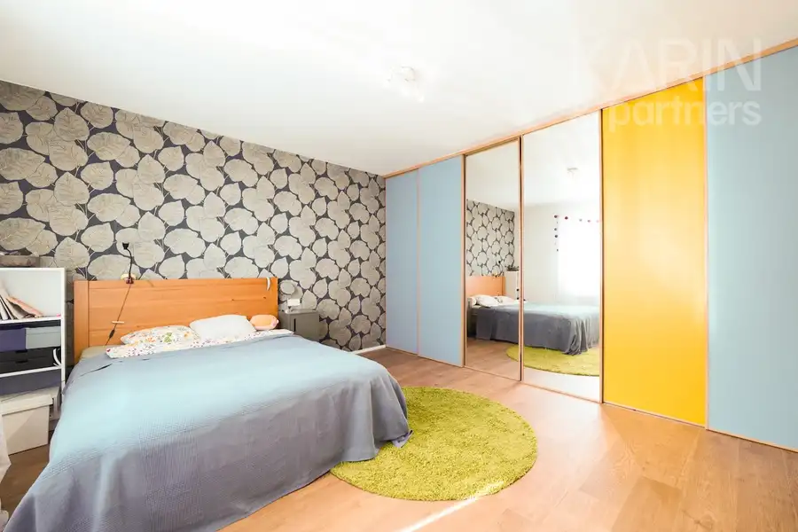
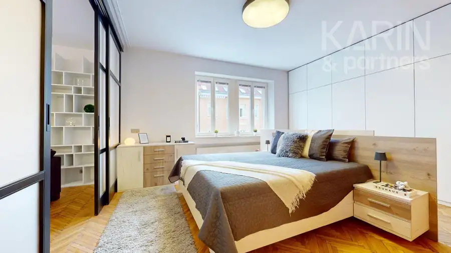
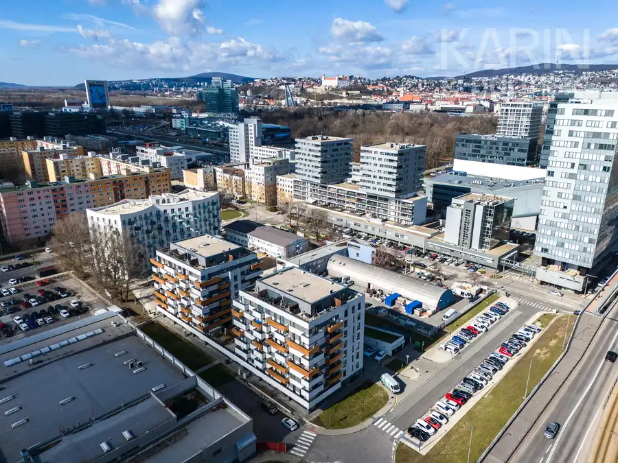

Pozemok 559 m² s projektom – ideálny na výstavbu vášho domu
Dlhá
- Plocha559 m²
- VlastníctvoOsobné
O nehnuteľnosti
pokojná rezidenčná lokalita | projekt domu v cene | pripravené na výstavbu | ideálne rodinné bývaniePredstavte si miesto, kde začína pokojné rodinné bývanie – obklopené prírodou, v bezpečnom prostredí a zároveň s pohodlnou dostupnosťou do mesta. Práve takýto potenciál ponúka stavebný pozemok v obci Dlhá, ktorý je pripravený na realizáciu vášho budúceho domova.Realitná kancelária KARIN & PARTNERS ponúka vo výhradnom zastúpení na predaj stavebný pozemok s výmerou 559 m², situovaný v novej rezidenčnej časti obce Dlhá, ktorá postupne vzniká ako príjemná lokalita pre moderné rodinné bývanie.PozemokPozemok je určený na individuálnu výstavbu rodinného domu a poskytuje ideálne podmienky na realizáciu bývania podľa predstáv budúceho majiteľa.K jeho veľkým benefitom patrí pripravenosť na výstavbu – priamo na pozemku sa nachádzajú inžinierske siete:prípojka elektrinyprípojka mestskej vodyVýraznou pridanou hodnotou je, že v cene pozemku je zahrnutý projekt moderného rodinného domu typu bungalov. Nový majiteľ tak získava nielen samotný pozemok, ale aj premyslené architektonické riešenie domu, čím ušetrí čas aj náklady spojené s projektovou prípravou.Táto kombinácia robí z ponuky ideálnu príležitosť pre klientov, ktorí chcú začať s výstavbou bez zdĺhavého plánovania.LokalitaObec Dlhá ponúka príjemnú vidiecku atmosféru, dostatok zelene a pokojné prostredie vhodné pre rodinný život. Lokalita je obľúbená najmä medzi klientmi, ktorí chcú bývať mimo ruchu mesta, no zároveň si zachovať dobrú dostupnosť do väčších miest.DostupnosťTrnava – približne 18 minút automBratislava – približne 52 minút automV obci sa nachádza materská škola a základné služby. Kompletná občianska vybavenosť vrátane základnej školy, zdravotného strediska či pošty je dostupná v neďalekej obci Suchá nad Parnou.Prečo je tento pozemok výnimočnýideálna výmera 559 m² pre rodinný dom,nová rezidenčná lokalita s pokojnou atmosférou,inžinierske siete priamo na pozemku,projekt moderného bungalovu v cene,možnosť okamžitej prípravy výstavby,bezpečné a pokojné prostredie vhodné pre rodiny,zástavka autobusov,výborná dostupnosť do Trnavy aj Bratislavy.Cena: 99.900 EURFotografie a text sú autorským dielom spoločnosti KARIN & PARTNERS.V prípade viacerých záujemcov si majiteľ vyhradzuje právo zvoliť najvýhodnejšiu ponuku.V cene sú zahrnuté služby realitnej kancelárie: kompletný právny servis, vypracovanie zmluvnej dokumentácie, poplatky za overenie podpisov a správny poplatok za vklad do katastra nehnuteľností.Pre našich klientov poskytujeme profesionálny a individuálny prístup, znalosť trhu a kompletný servis pri kúpe či predaji nehnuteľnosti. Radi vám pomôžeme aj so zabezpečením financovania prostredníctvom hypotekárneho úveru.Kontakt:JUDr. Marcel Koreccertifikovaný realitný maklérčlen Realitnej Únie Slovenskej republiky korec@karinpartners.sk | 0908 763 329
Parametre
| Druh | Pozemok pre rodinné domy |
|---|---|
| Dátum zverejnenia | 13. 8. 2026 |
| Elektrina | Na pozemku |
| Odpadové vody | Na pozemku - Žumpa |
| Plocha pozemku | 559 m² |
| Terén pozemku | Rovinatý |
| Typ | Predaj |
| Vlastníctvo | Osobné |
| Voda | Na pozemku |
Kde to je


Mohlo by Vás zaujímať

DomNové10 1 350 €Kompletne zrekonštruovaný 3-izbový rodinný dom so záhradou a garážou Ružinov, Bratislava 144.43 m² Rodinný dom so záhradou a veľkou garážou | 3 podlažia | kompletne zrekonštruovaný | TrnávkaHľadáte bývanie, ktoré Vám ponúkne súkromie rodinného…
BytNové10 375 000 €Predaj moderný byt v absolútnom centre Staré Mesto, Bratislava 2-izbový71.97 m²3. podlažie byt po kompletnej rekonštrukcii od architekta | absolútne centrum mesta | balkón | tehlový bytový dom s výťahom | bývanie aj investíciaHľadáte…
BytNové4 Cena dohodouPetržalka - hľadáme 3i alebo 4i byt v novostavbe Petržalka, Bratislava 3-izbový70 m² Pre konkrétnych záujemcov hľadáme 3-izbový alebo 4-izbový byt v novostavbe (prípadne staršom bytovom dome, nie však v paneláku) na začiatku…